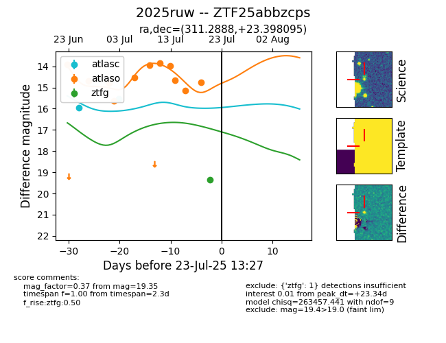

Target ZTF25abbzcps at 2025-07-23 13:27, see:
FINK: fink-portal.org/ZTF25abbzcps
Lasair: lasair-ztf.lsst.ac.uk/objects/ZTF25abbzcps
ALeRCE: alerce.online/object/ZTF25abbzcps
TNS: wis-tns.org/object/2025ruw
YSE: ziggy.ucolick.org/yse/transient_detail/2025ruw
alt names
ZTF25abbzcps (ztf,fink)
2025ruw (tns,yse)
coordinates:
equatorial (ra, dec) = (311.2888,+23.39810)
galactic (l, b) = (67.3336,-11.99227)
photometry
last atlasc=15.52, atlaso=14.77, ztfg=19.35
2 atlasc, 11 atlaso, 1 ztfg detections
